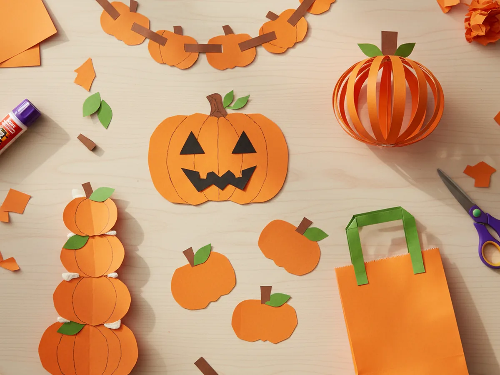
There is something so cozy about a stack of orange and brown construction paper, a pair of safety scissors, and a kitchen table covered in little pumpkin shapes. Pumpkin construction paper crafts are some of the easiest ways to bring fall feelings into your home, and they almost always end with a child saying, "Can we make another one?" No fancy supplies, no big mess, just simple folds and cuts that turn into the cutest little pumpkins. 🎃
This roundup gathers 20 of the sweetest pumpkin construction paper crafts for kids, from classic jack-o-lanterns to garlands, mobiles, treat bags, and woven 3D pumpkin loops. Every idea here is beginner-friendly, low-mess, and realistic for a normal Tuesday afternoon. Pick one or two that catch your eye and have a wonderful little crafting session together. 🍂
What You'll Need
Most of these pumpkin construction paper crafts use the same small set of supplies, so a quick gather at the start will set you up for the whole list.
- Crayola Construction Paper (96 sheets, assorted colors), plenty of orange, brown, green, and black for every project on this list.
- Fiskars Training Scissors for Kids (ages 3+), safe blunt tips and an easy-grip handle that makes clean cuts simple for little hands.
- Elmer's Disappearing Purple Glue Sticks (30-count, washable), reliable and washable, perfect for all paper-to-paper bonding on these pumpkin projects.
- DECORA Self-Adhesive Googly Eyes (assorted sizes), great for giving every pumpkin a cheerful, silly little face in seconds.
- Crayola Ultra Clean Washable Markers (10-count), bold colors for adding faces, ridges, vines, and details on construction paper.
- Clear tape or washi tape, for securing folds on lanterns, garlands, and mobiles.
- Pencil, for tracing pumpkin shapes before cutting.
20 Pumpkin Construction Paper Craft Ideas for Kids
1. Classic Round Construction Paper Pumpkin
The simplest place to start is a flat round pumpkin shape on a sheet of paper. Cut a pumpkin silhouette from orange construction paper, add a small brown rectangle stem on top, and finish with a tiny green leaf and a curly green vine drawn with marker. Classic construction paper pumpkins are the perfect first project for toddlers and preschoolers, and they look adorable taped to a window or a fridge. Make a whole patch of three or five in different sizes for an instant fall display.
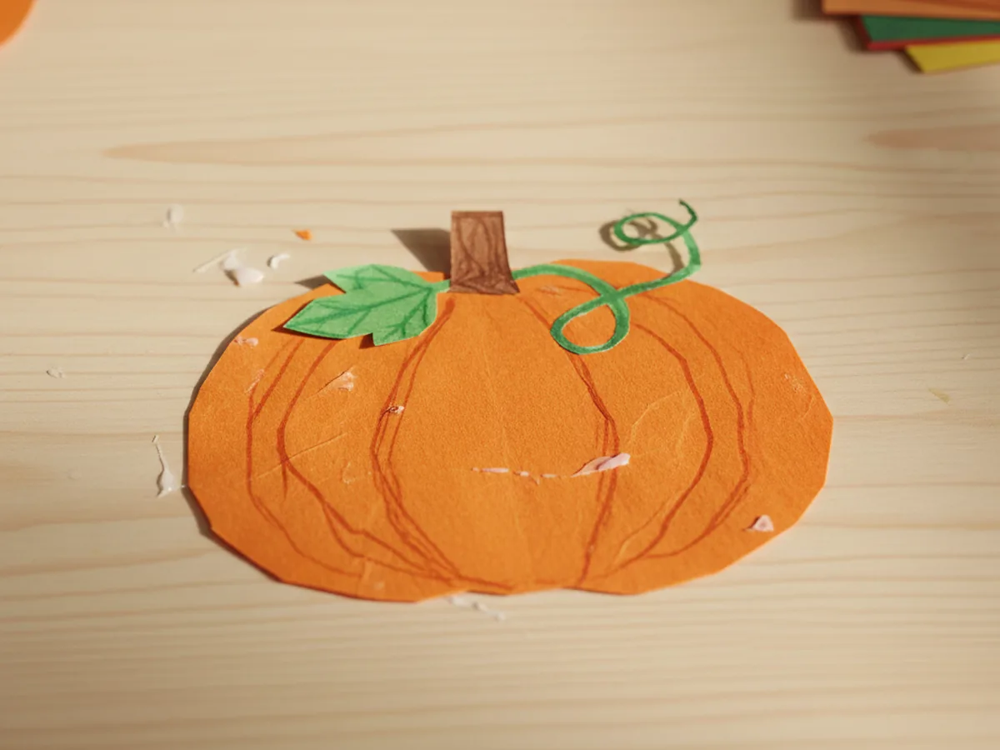
2. 3D Paper Strip Loop Pumpkin
Cut six or eight long strips of orange construction paper, stack them, and pin or staple the top and bottom ends together so they fan out into a round 3D pumpkin shape. Add a brown paper stem and a green leaf at the top. 3D paper strip pumpkins are one of the most satisfying pumpkin construction paper crafts on this list because the finished result actually looks dimensional. Hang a few from string for a cheerful fall mobile or set them on a shelf as little decorations.
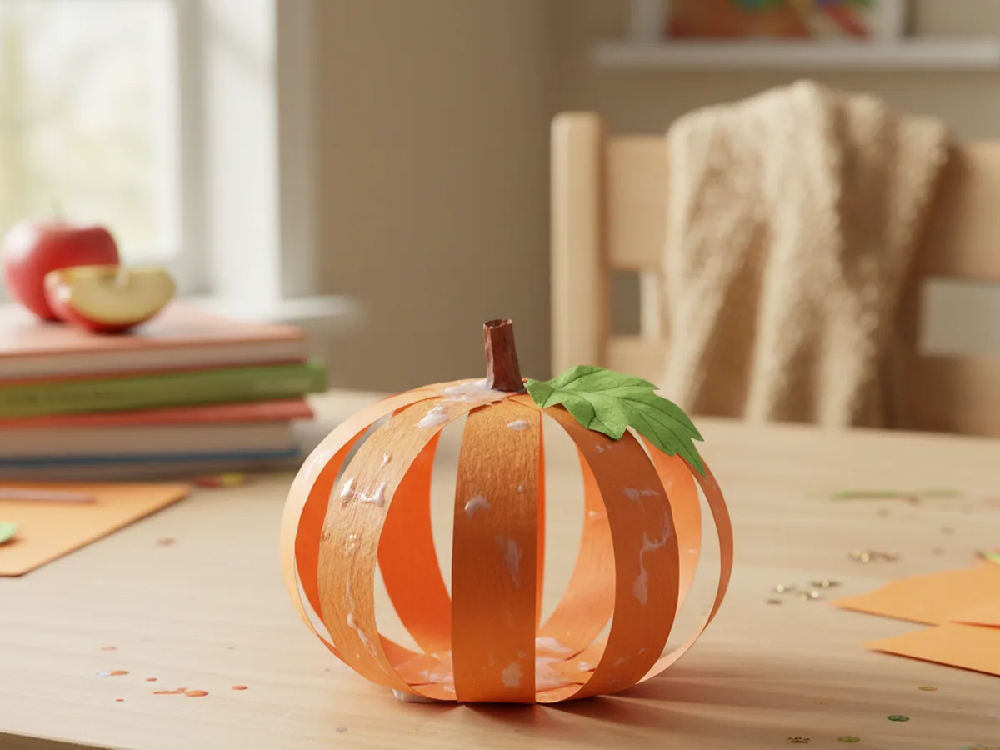
3. Construction Paper Jack-o-Lantern
Cut a big round orange pumpkin shape, then cut out triangle eyes, a triangle nose, and a jagged smile from black construction paper. Glue the black shapes onto the pumpkin face for an instant jack-o-lantern. Construction paper jack-o-lanterns are a Halloween classic that even very young children can do with a little help on the cutting. Let your child decide if their pumpkin should be smiling, silly, surprised, or spooky for extra fun.
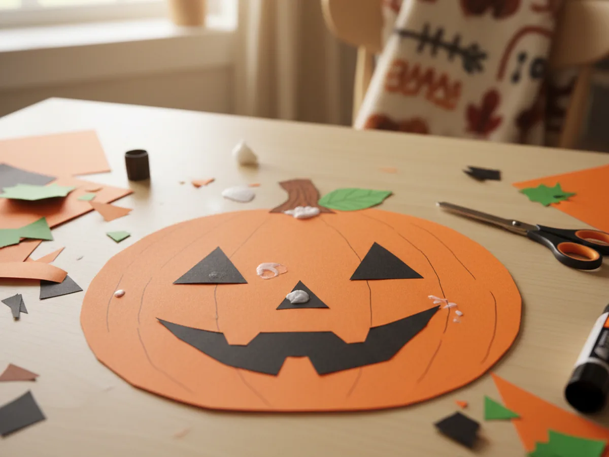
4. Paper Pumpkin Patch Collage
Cover a half sheet of brown construction paper with green grass strips along the bottom, then glue on five or six small pumpkin shapes in different sizes and shades of orange. Add a yellow sun, a couple of curling green vines, and even a tiny scarecrow if your child is feeling inspired. A pumpkin patch collage is a wonderful way to talk about the harvest season together. The finished scene looks beautiful framed for a child's bedroom wall.
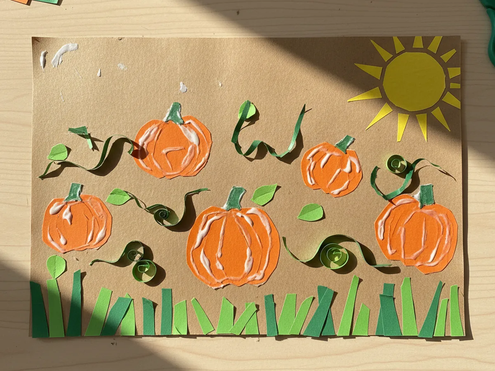
5. Pumpkin Chain Garland
Cut small orange pumpkin shapes and tiny green leaf shapes, punch a hole near the top of each, and thread them onto a long piece of yarn or string. Space them out so the garland looks full and balanced when hung. A pumpkin chain garland is one of the most decorative pumpkin construction paper crafts, and it looks lovely draped along a mantel, a window, or above a doorway. Children love seeing their work hung up where everyone can admire it.
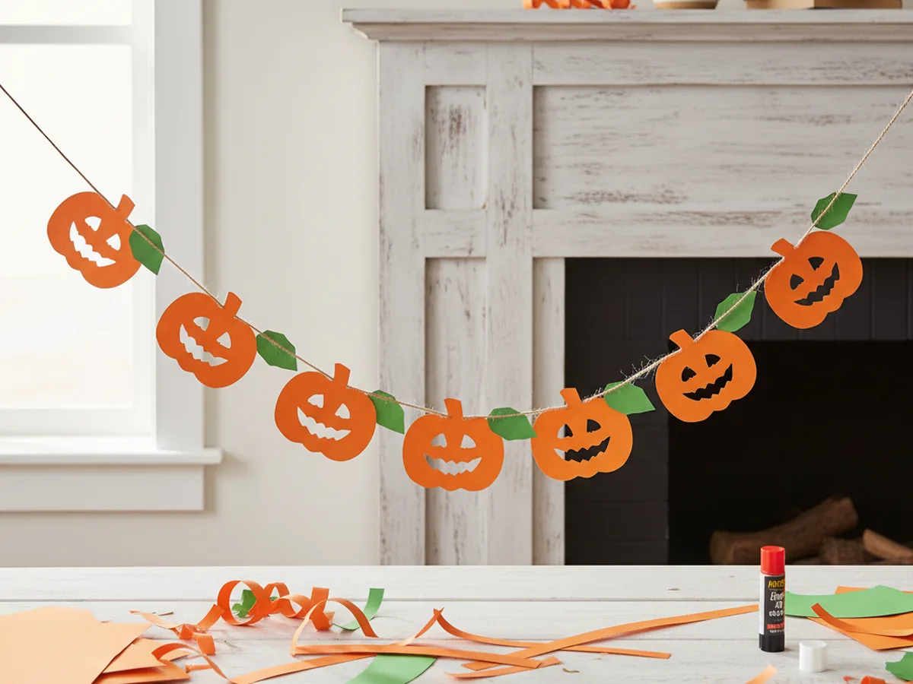
6. Accordion-Folded Pumpkin
Take a square of orange construction paper and fold it accordion-style with narrow even folds. Pinch the middle together with a small piece of tape to create a fan-like rounded pumpkin shape. Add a brown paper stem and a curly green vine. Accordion-folded pumpkins have a lovely textured look, and the folding step gives older children a satisfying sense of accomplishment. A row of three in different sizes makes a beautiful table centerpiece.
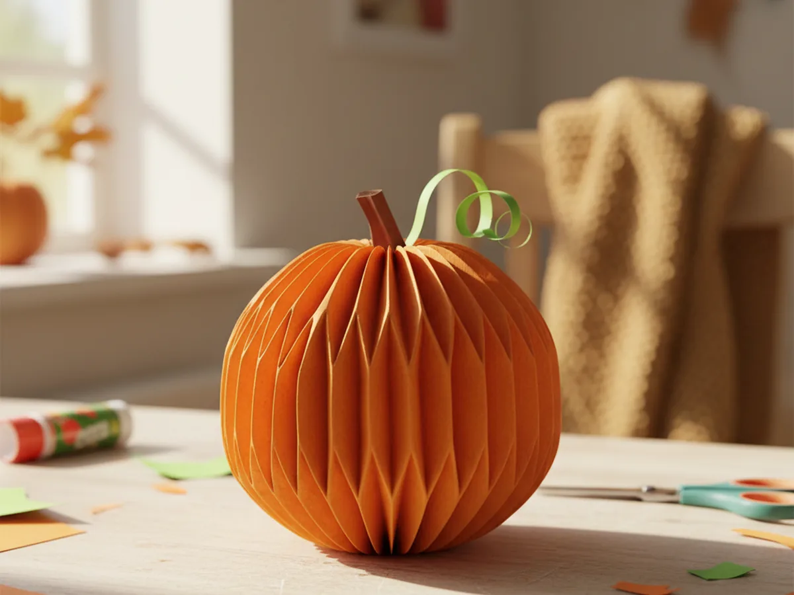
7. Construction Paper Pumpkin Lantern
Roll a sheet of orange construction paper into a short cylinder and tape the edges together. Cut vertical slits up the side, stopping about an inch from the top and bottom, then gently push the slits outward to create a rounded pumpkin shape. Add a brown paper stem on top and draw a jack-o-lantern face on the front. Place a small battery-powered tealight inside for a soft, glowing fall decoration that feels magical at dusk. ✨
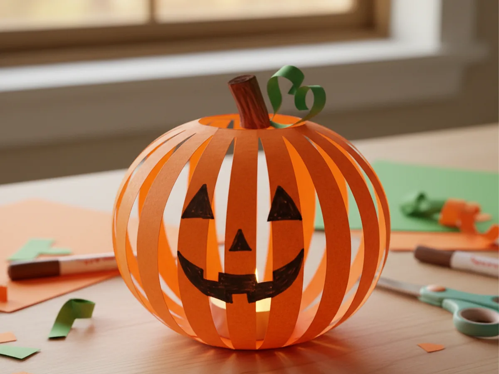
8. Torn Paper Pumpkin Mosaic
Draw a big pumpkin outline on a sheet of white construction paper. Tear small pieces of orange, yellow, and red paper into roughly square or pebble-sized chunks, then glue them inside the outline like a mosaic. Add a brown paper stem and torn green leaf shapes. Torn paper pumpkin mosaics are wonderful for toddlers because they skip the hardest part, the cutting, and they offer a beautiful texture you cannot get any other way. Even the youngest crafters can complete this one with confidence.
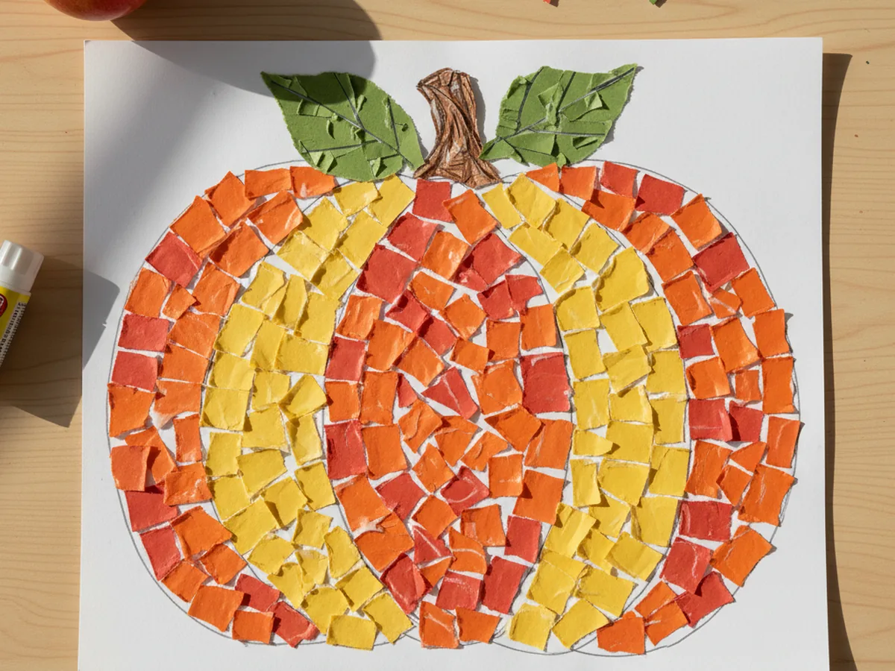
9. Pumpkin Trick-or-Treat Bag
Fold a large sheet of orange construction paper in half and staple the two open sides to form a small pouch. Cut a pumpkin face from black paper and glue it on the front, then attach a green or brown ribbon handle through two punched holes at the top. Pumpkin trick-or-treat bags are perfect for school parties or family Halloween nights at home, and children love showing off the bag they made themselves. Make several so the whole family can carry one.
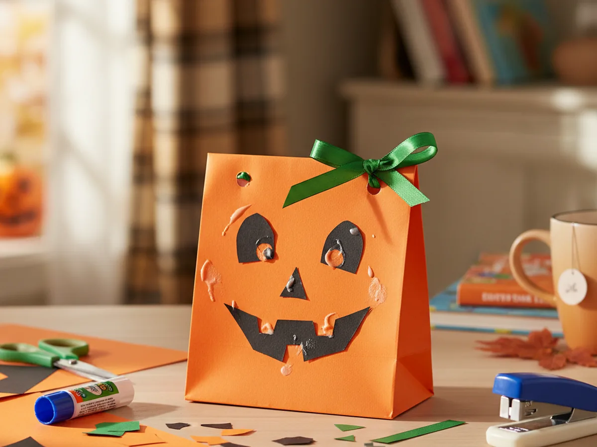
10. Pumpkin Greeting Card
Fold a sheet of cream or white construction paper in half to make a card. Cut a small orange pumpkin shape and glue it on the front, add a brown stem, a green leaf, and a friendly handwritten greeting like "Happy Fall." Pumpkin greeting cards are the perfect handmade gift for grandparents, neighbors, or teachers, and they feel especially sweet when the child writes the inside message themselves. Make a small stack to give out throughout the season.
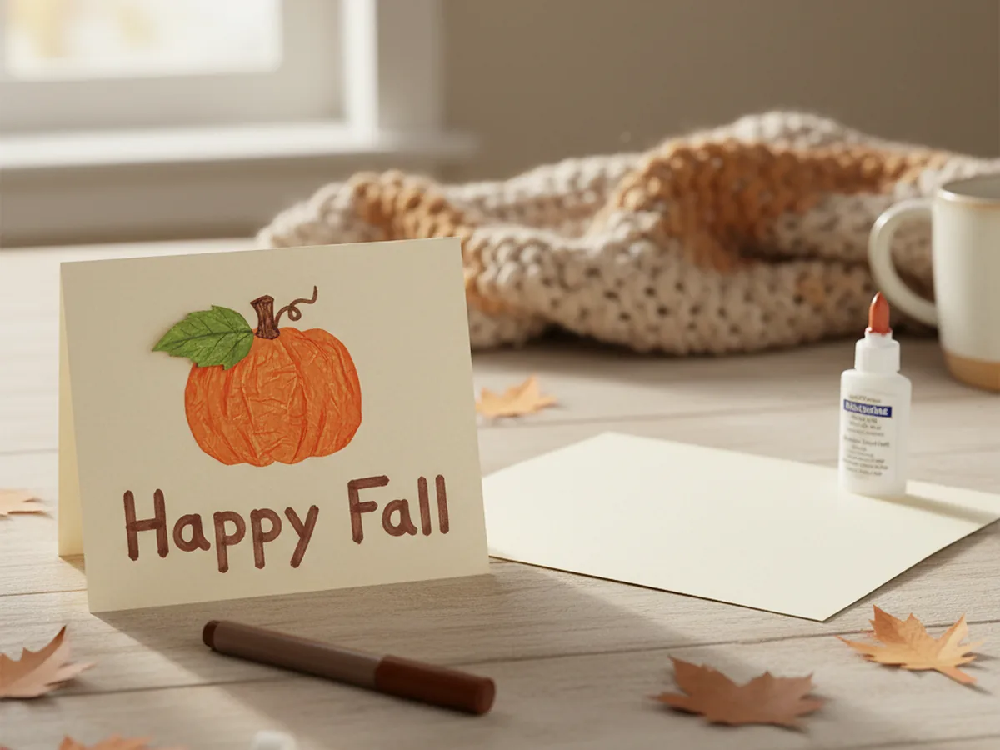
11. Construction Paper Pumpkin Wreath
Cut a large ring from a paper plate or a piece of brown construction paper for the base. Cut a dozen small orange pumpkin shapes in two or three sizes, then glue them around the entire ring, overlapping where needed. Tuck a few small green paper leaves between the pumpkins for color contrast. A construction paper pumpkin wreath looks especially welcoming hung on a child's bedroom door, and it costs almost nothing to make.
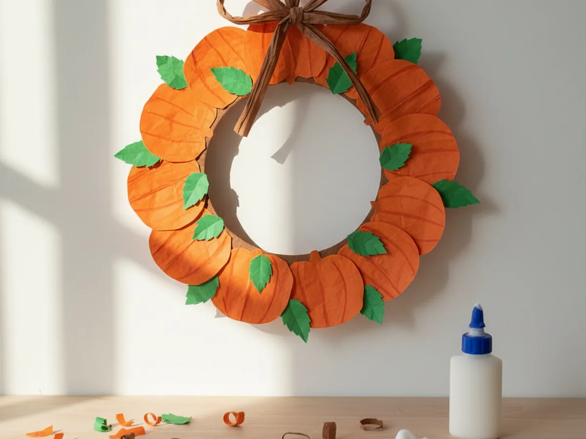
12. Paper Pumpkin Crown
Cut a long strip of orange construction paper to fit around a child's head and staple it into a crown band. Cut five small pumpkin shapes from orange paper, add tiny brown stems, and glue them along the front of the band like jewels on a crown. Paper pumpkin crowns are a hit at Halloween parties, fall classroom celebrations, and pretend play at home. Children love wearing them around the house all afternoon long.
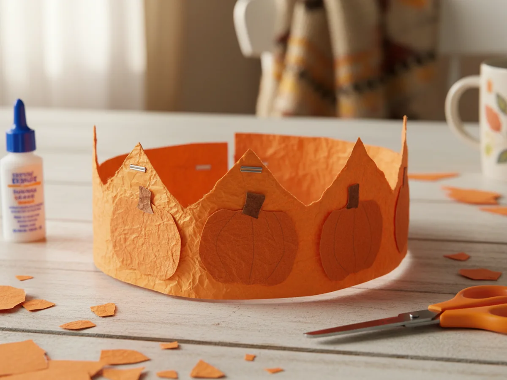
13. Pumpkin Family Portrait
Cut four or five orange pumpkin shapes in graduated sizes from large to small to represent each member of your family. Give each pumpkin a different face with markers and googly eyes, and add a name underneath. Pumpkin family portraits are a beautiful way to celebrate togetherness during fall, and the personal touches make this one of the most meaningful pumpkin construction paper crafts for kids. Hang the finished piece in the kitchen or entryway to enjoy all season.
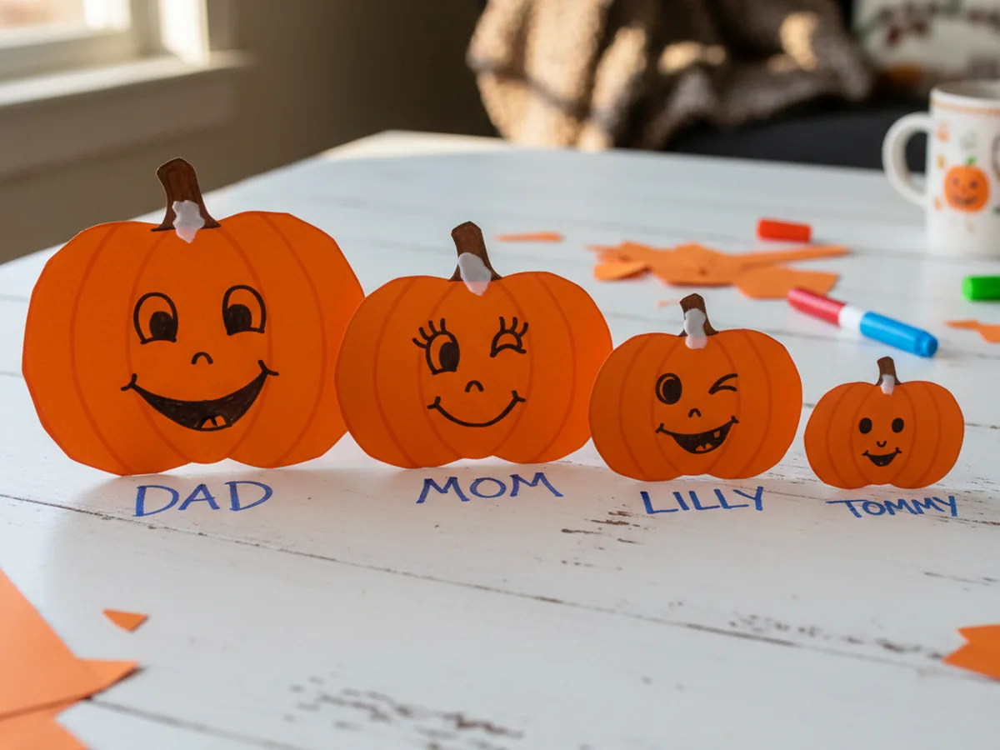
14. Pumpkin Corner Bookmark
Fold a square of orange construction paper in half to form a triangle pocket, then fold the two outer corners in to meet the center and tuck one flap inside the other to create a corner bookmark. Draw a friendly jack-o-lantern face on the front and add a tiny brown paper stem at the top. These pumpkin corner bookmarks slip over the corner of any page and make a wonderful handmade gift tucked into a fall picture book. 📖
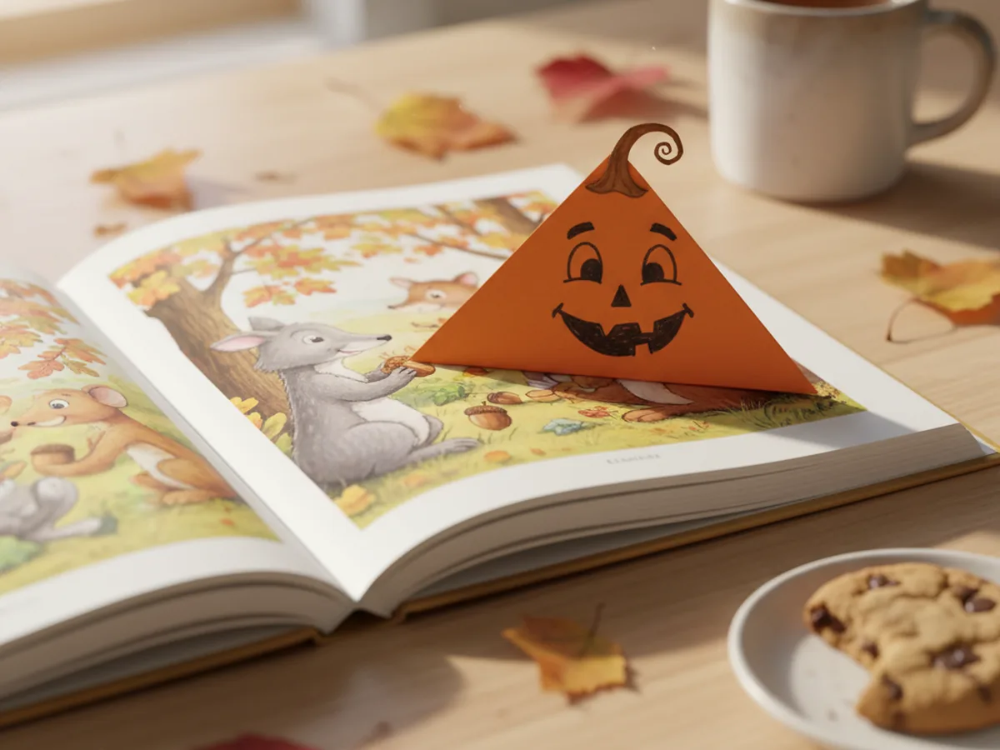
15. Stacked Pumpkin Tower
Cut three orange pumpkin shapes in graduated sizes, from large at the bottom to small at the top, and glue them stacked on top of each other on a sheet of cream paper. Add a brown stem at the very top and a couple of curling vines along the sides. A stacked pumpkin tower looks like a beautiful farmhouse fall decoration and gives older children a chance to practice careful proportional cutting. The finished piece looks especially lovely framed.
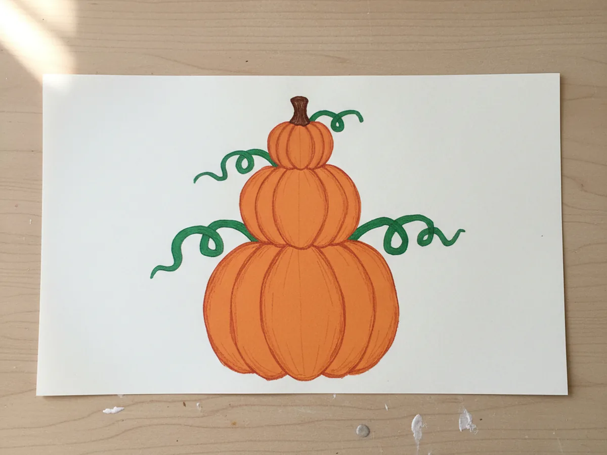
16. Black Cat on a Pumpkin
Cut a large orange pumpkin shape and glue a small black paper cat silhouette curled on top with two tiny pointy ears, a curved tail, and two small yellow eyes. Black cat on a pumpkin crafts bring a charming, slightly spooky autumn feel that fits the whole month of October. This combo is one of the cutest pumpkin construction paper crafts for kids who love both Halloween and animals at the same time.
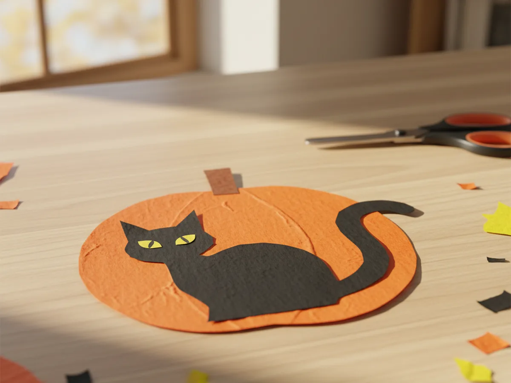
17. Hanging Pumpkin Mobile
Cut six to eight small orange pumpkin shapes in different sizes, punch holes in the tops, and tie them at varying lengths onto four or five strings. Attach the strings to a small wooden twig, dowel, or stick to create a mobile that gently sways. A pumpkin mobile is a peaceful little decoration to hang above a child's reading nook or window, and the cutting and tying are wonderfully calming for older children to do together.
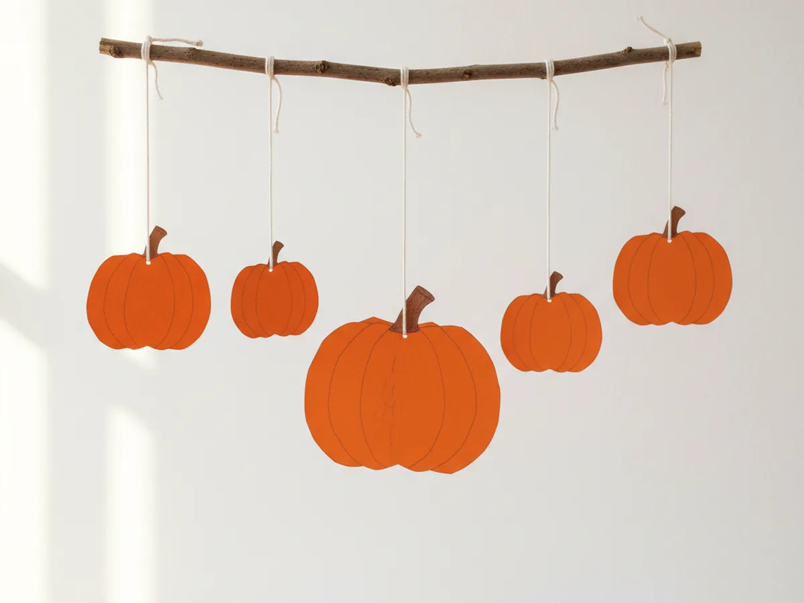
18. Pumpkin Place Cards
Fold small rectangles of cream construction paper into tent-style place cards, then cut tiny orange pumpkin shapes and glue one onto each card alongside a guest's name written in marker. Pumpkin place cards are the perfect Thanksgiving table craft to make together the day before the meal. Children love feeling responsible for "setting" the table, and the handmade touches make every guest smile when they sit down.
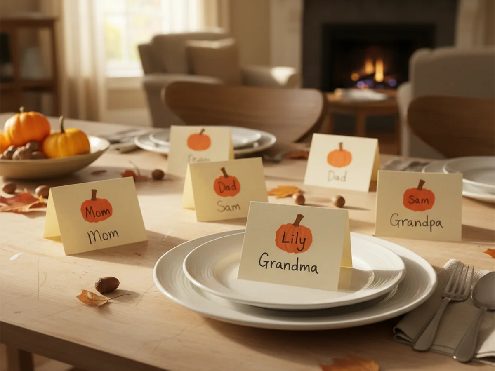
19. Pumpkin Vine Wall Mural
Tape a long strip of brown construction paper across a stretch of wall as the main vine, then add curling green paper tendrils branching off in both directions. Tape orange paper pumpkin shapes of different sizes along the vine and tuck in green paper leaves wherever there are gaps. A pumpkin vine wall mural is a wonderful weekend project that turns into a temporary fall room transformation, and kids love watching it grow as they add each piece.
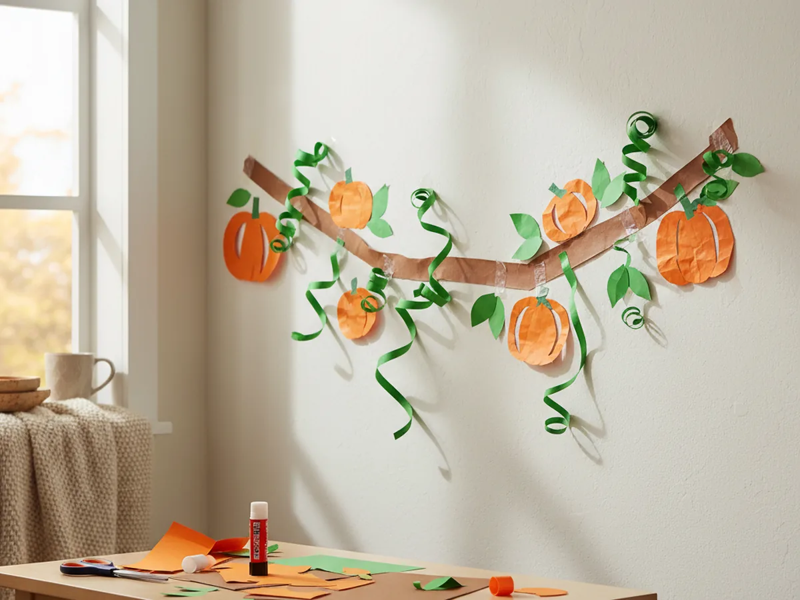
20. Pumpkin Door Hanger
Cut a long oval shape from orange construction paper, leaving a small circle hole at the top to fit over a doorknob. Glue on a brown stem, a green leaf, and a friendly jack-o-lantern face, and write a sweet seasonal greeting like "Welcome Fall" along the bottom. A pumpkin door hanger is one of the most useful pumpkin construction paper crafts because it brings autumn charm right to the entrance of any room. Make one for every bedroom door in the house.
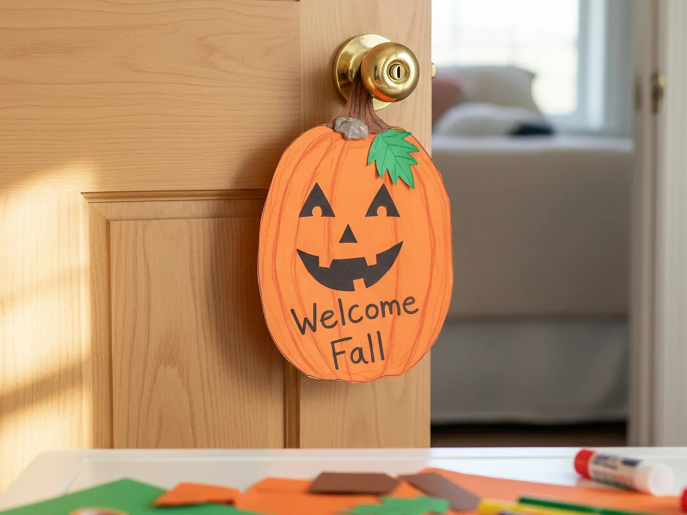
Final Thoughts
There is something so peaceful about an afternoon spent cutting little orange pumpkins together at the kitchen table. These 20 pumpkin construction paper crafts show that the simplest supplies can create the most memorable moments. Pick one idea today, clear a small space, gather your paper, and enjoy the cozy autumn time together. The crafts are sweet, but the time you spend making them is the part you will both treasure most.
More Crafts You'll Love
If you loved these pumpkin projects, here are a few more autumn ideas perfect for cozy fall crafting at home.
Happy crafting, and may every little pumpkin you make together bring a smile to your home this fall.